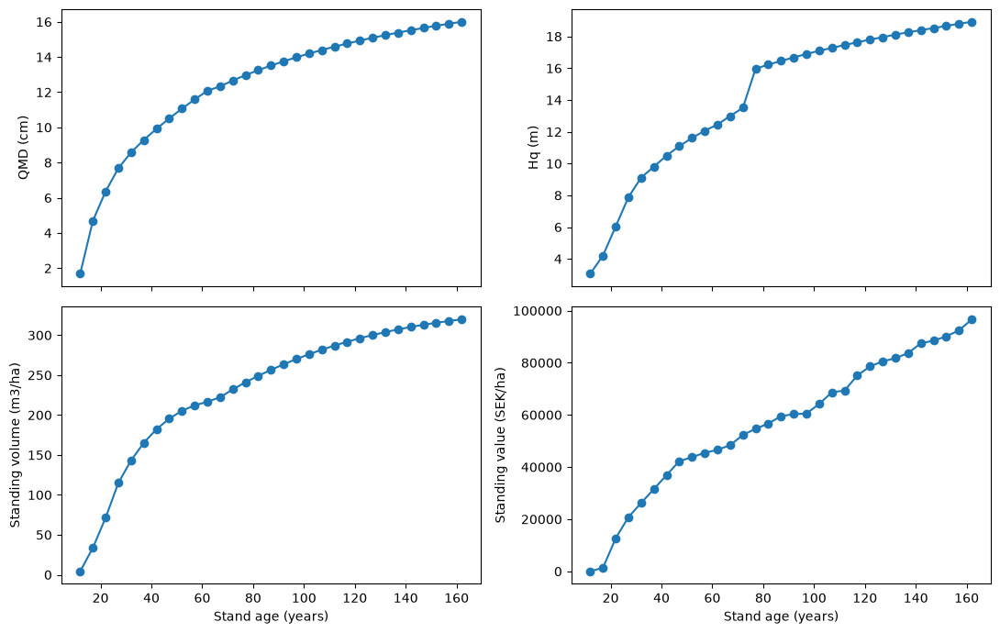

Soderberg 1986 composite preset demo#
This notebook demonstrates the Soderberg1986Pipeline, which keeps the regeneration + young-stand + mortality + valuation workflow from the Elfving preset but uses Soderberg (1986) for mature-tree DBH growth.
It also reports qmd_cm and hq_m in each projection step.
[1]:
import matplotlib.pyplot as plt
from pyforestry.base.helpers.primitives import SiteBase
from pyforestry.sweden.simulation.presets import (
Soderberg1986PipelineConfig,
build_soderberg_1986_pipeline,
)
from pyforestry.sweden.site import Sweden, SwedishSite
from pyforestry.sweden.siteindex.sis.generated_site_category_trees import (
predict_site_categories_county_tree,
)
from pyforestry.sweden.siteindex.sis.hagglund_lundmark_1977 import Hagglund_Lundmark_1977_SIS
[2]:
class SwedishSiteDemo(SwedishSite):
"""Concrete wrapper for notebooks (implements SiteBase abstract method)."""
def compute_attributes(self) -> None:
SwedishSite.__post_init__(self)
def __post_init__(self) -> None:
SiteBase.__post_init__(self)
[3]:
requested_sis = 20.0
site_category_species = "Pinus sylvestris"
county = Sweden.County.KOPPARBERG_OVRIGA
predicted_site_categories = predict_site_categories_county_tree(
sis_hagglund_1979=requested_sis,
species=site_category_species,
Direktlan=county,
)
site = SwedishSiteDemo(
latitude=60.5,
longitude=15.0,
altitude=150.0,
field_layer=predicted_site_categories["field_layer"],
bottom_layer=predicted_site_categories["bottom_layer"],
soil_texture=predicted_site_categories["soil_texture"],
soil_moisture=predicted_site_categories["soil_moisture"],
soil_depth=predicted_site_categories["soil_depth"],
soil_water=predicted_site_categories["soil_water"],
ditched=predicted_site_categories["ditched"],
)
achieved_sis = Hagglund_Lundmark_1977_SIS(
species=site_category_species,
latitude=site.latitude,
altitude=site.altitude or 0.0,
soil_moisture=site.soil_moisture,
ground_layer=site.bottom_layer or Sweden.BottomLayer.FRESH_MOSS,
vegetation=site.field_layer,
soil_texture=site.soil_texture or Sweden.SoilTextureTill.SANDY,
climate_code=site.climate_zone or Sweden.ClimateZone.K1,
lateral_water=site.soil_water or Sweden.SoilWater.SELDOM_NEVER,
soil_depth=site.soil_depth or Sweden.SoilDepth.DEEP,
incline_percent=site.incline_percent or 0.0,
aspect=site.aspect or 0.0,
nfi_adjustments=True,
dlan=site.county or county,
ditched=bool(site.ditched),
peat=False,
gotland=False,
coast=(site.distance_to_coast or 9999.0) < 50.0,
limes_norrlandicus=bool(site.n_of_limes_norrlandicus),
)
sis_closeness = {
"requested_sis": requested_sis,
"achieved_sis": float(achieved_sis),
"sis_abs_error": abs(float(achieved_sis) - requested_sis),
"sis_rel_error_pct": 100.0 * abs(float(achieved_sis) - requested_sis) / requested_sis,
}
display({"sis_closeness": sis_closeness, "predicted_site_categories": predicted_site_categories})
config = Soderberg1986PipelineConfig(
sample_trees=120,
random_seed=2026,
deterministic=True,
dt_years=5.0,
)
preset = build_soderberg_1986_pipeline(config)
preset
{'sis_closeness': {'requested_sis': 20.0,
'achieved_sis': 20.698654683125625,
'sis_abs_error': 0.6986546831256248,
'sis_rel_error_pct': 3.493273415628124},
'predicted_site_categories': {'field_layer': <SwedenFieldLayer.LICHEN_FREQUENT: Vegetation(code=17, swedish_name='Lavrik', english_name='Lichen, frequent occurrence', index=-0.5)>,
'bottom_layer': <SwedenBottomLayer.BOGMOSS_TYPE: BottomLayerType(code=4, english_name='Bogmoss type (Sphagnum)', swedish_name='Vitmosstyp')>,
'soil_texture': <SwedenSoilTextureTill.SANDY_MOIG: SoilTextureCategory(code=4, swedish_name='Sandig-moig morän', english_name='Sandy-silty till', short_name='Medium sand')>,
'soil_moisture': <SwedenSoilMoisture.MESIC: SoilMoistureData(code=2, swedish_description='frisk', english_description='Mesic (subsoil water depth = 1-2 m)')>,
'soil_depth': <SwedenSoilDepth.DEEP: SoilDepthCat(code=1, swedish_description='Mäktigt >70 cm. Inga synliga hällar', english_description='Deep >70cm. No visible stone outcrops.')>,
'soil_water': <SwedenSoilWater.SHORTER_PERIODS: SoilWaterCat(code=2, swedish_description='kortare perioder', english_description='Shorter periods')>,
'ditched': False}}
[3]:
<pyforestry.sweden.simulation.presets.soderberg_1986_pipeline.Soderberg1986Pipeline at 0x7f8ec4a23770>
[4]:
results = preset.run_projection(site=site, n_steps=30)
results
/home/runner/work/pyforestry/pyforestry/src/pyforestry/sweden/simulation/mortality/engine.py:452: UserWarning: Soderberg self-thinning annual probability exceeded [0, 1]; clamped.
probabilities, adjusted, factors, diag = calibrate_soderberg(
[4]:
| step_index | age_years | years_elapsed | stems_per_ha | mean_dbh_cm | mean_height_m | qmd_cm | hq_m | basal_area_m2_ha | standing_volume_m3sk_per_ha | ... | birch_ba_share | handover_dbh_cm | handover_mean_height_m | handover_smoothing_width_m | phase_over_weight | young_damage_index_mean | young_damage_mortality_stems_removed_per_ha | mortality_fraction_mean | mortality_stems_removed_per_ha | young_stand_potential_q | |
|---|---|---|---|---|---|---|---|---|---|---|---|---|---|---|---|---|---|---|---|---|---|
| 0 | 0.0 | 12.0 | 0.0 | 6244.836223 | 1.016164 | 1.715820 | 1.684151 | 3.064966 | 1.391148 | 4.292985 | ... | 0.307493 | 10.0 | 7.0 | 1.0 | 0.023479 | 0.000000 | 0.000000 | 0.000000 | 0.000000 | 77.405649 |
| 1 | 1.0 | 17.0 | 5.0 | 5887.431819 | 3.373596 | 2.804763 | 4.696728 | 4.211589 | 10.200150 | 33.834751 | ... | 0.458221 | 10.0 | 7.0 | 1.0 | 0.019741 | 0.334118 | 357.404404 | 0.000000 | 0.000000 | 77.405649 |
| 2 | 2.0 | 22.0 | 10.0 | 5499.208242 | 4.615034 | 3.919477 | 6.362217 | 6.038806 | 17.482637 | 71.296407 | ... | 0.414063 | 10.0 | 7.0 | 1.0 | 0.058055 | 0.309568 | 288.794491 | 0.032829 | 99.429086 | 77.405649 |
| 3 | 3.0 | 27.0 | 15.0 | 5084.802155 | 5.556470 | 4.934087 | 7.677256 | 7.882106 | 23.538348 | 114.949419 | ... | 0.399718 | 10.0 | 7.0 | 1.0 | 0.148796 | 0.290809 | 257.924056 | 0.055494 | 156.482031 | 77.405649 |
| 4 | 4.0 | 32.0 | 20.0 | 4705.641512 | 6.203203 | 5.389893 | 8.578298 | 9.114058 | 27.196372 | 143.155275 | ... | 0.390548 | 10.0 | 7.0 | 1.0 | 0.194099 | 0.341270 | 202.933136 | 0.066187 | 176.227507 | 77.405649 |
| 5 | 5.0 | 37.0 | 25.0 | 4307.224024 | 6.768155 | 5.962535 | 9.285682 | 9.803689 | 29.168558 | 165.199010 | ... | 0.393291 | 10.0 | 7.0 | 1.0 | 0.251268 | 0.463665 | 225.047761 | 0.071493 | 173.369728 | 77.405649 |
| 6 | 6.0 | 42.0 | 30.0 | 3936.774729 | 7.287962 | 6.469048 | 9.919011 | 10.499224 | 30.420559 | 182.264489 | ... | 0.395706 | 10.0 | 7.0 | 1.0 | 0.377420 | 0.477029 | 206.776141 | 0.073884 | 163.673154 | 77.405649 |
| 7 | 7.0 | 47.0 | 35.0 | 3596.678361 | 7.783706 | 6.930908 | 10.506292 | 11.094284 | 31.181026 | 195.363627 | ... | 0.397434 | 10.0 | 7.0 | 1.0 | 0.505314 | 0.491090 | 188.403721 | 0.074936 | 151.692646 | 77.405649 |
| 8 | 8.0 | 52.0 | 40.0 | 3287.329031 | 8.266876 | 7.361355 | 11.063079 | 11.611386 | 31.599855 | 205.332663 | ... | 0.398452 | 10.0 | 7.0 | 1.0 | 0.621156 | 0.505849 | 170.305820 | 0.074843 | 139.043510 | 77.405649 |
| 9 | 9.0 | 57.0 | 45.0 | 3007.777677 | 8.734517 | 7.759863 | 11.585687 | 12.061089 | 31.708758 | 212.142586 | ... | 0.397483 | 10.0 | 7.0 | 1.0 | 0.717468 | 0.521320 | 152.786107 | 0.073910 | 126.765247 | 77.405649 |
| 10 | 10.0 | 62.0 | 50.0 | 2756.631382 | 9.190474 | 8.134081 | 12.082087 | 12.460832 | 31.604762 | 216.604213 | ... | 0.394939 | 10.0 | 7.0 | 1.0 | 0.791263 | 0.537515 | 136.051462 | 0.072522 | 115.094832 | 77.405649 |
| 11 | 11.0 | 67.0 | 55.0 | 2652.905302 | 9.249516 | 8.137408 | 12.331702 | 12.987322 | 31.685288 | 222.284691 | ... | 0.389116 | 10.0 | 7.0 | 1.0 | 0.999081 | 0.000000 | 0.000000 | 0.070903 | 103.726081 | 77.405649 |
| 12 | 12.0 | 72.0 | 60.0 | 2560.638803 | 9.366369 | 8.167811 | 12.662473 | 13.509515 | 32.245956 | 232.089992 | ... | 0.376996 | 10.0 | 7.0 | 1.0 | 0.999391 | 0.000000 | 0.000000 | 0.068372 | 92.266498 | 77.405649 |
| 13 | 13.0 | 77.0 | 65.0 | 2477.607550 | 9.460003 | 8.171638 | 12.968338 | 15.968278 | 32.725860 | 241.007641 | ... | 0.365634 | 10.0 | 7.0 | 1.0 | 0.999618 | 0.000000 | 0.000000 | 0.066229 | 83.031253 | 77.405649 |
| 14 | 14.0 | 82.0 | 70.0 | 2402.953597 | 9.533547 | 8.153773 | 13.250945 | 16.228496 | 33.138205 | 249.104273 | ... | 0.354941 | 10.0 | 7.0 | 1.0 | 0.999751 | 0.000000 | 0.000000 | 0.063229 | 74.653952 | 77.405649 |
| 15 | 15.0 | 87.0 | 75.0 | 2335.714465 | 9.589946 | 8.119309 | 13.512401 | 16.454990 | 33.494590 | 256.485740 | ... | 0.344834 | 10.0 | 7.0 | 1.0 | 0.999832 | 0.000000 | 0.000000 | 0.060289 | 67.239132 | 77.405649 |
| 16 | 16.0 | 92.0 | 80.0 | 2274.954678 | 9.631853 | 8.081602 | 13.755009 | 16.681488 | 33.805269 | 263.563665 | ... | 0.335236 | 10.0 | 7.0 | 1.0 | 0.999883 | 0.000000 | 0.000000 | 0.057442 | 60.759787 | 77.405649 |
| 17 | 17.0 | 97.0 | 85.0 | 2219.794718 | 9.662476 | 8.032080 | 13.982430 | 16.894542 | 34.085368 | 270.124524 | ... | 0.326027 | 10.0 | 7.0 | 1.0 | 0.999917 | 0.000000 | 0.000000 | 0.054923 | 55.159960 | 77.405649 |
| 18 | 18.0 | 102.0 | 90.0 | 2169.520331 | 9.683232 | 7.972650 | 14.195932 | 17.100926 | 34.338510 | 276.199986 | ... | 0.317182 | 10.0 | 7.0 | 1.0 | 0.999941 | 0.000000 | 0.000000 | 0.052596 | 50.274387 | 77.405649 |
| 19 | 19.0 | 107.0 | 95.0 | 2123.456024 | 9.695306 | 7.904718 | 14.396855 | 17.277268 | 34.567535 | 281.819989 | ... | 0.308681 | 10.0 | 7.0 | 1.0 | 0.999956 | 0.000000 | 0.000000 | 0.050546 | 46.064308 | 77.405649 |
| 20 | 20.0 | 112.0 | 100.0 | 2081.056392 | 9.699681 | 7.829509 | 14.586294 | 17.462713 | 34.774721 | 287.010290 | ... | 0.300503 | 10.0 | 7.0 | 1.0 | 0.999967 | 0.000000 | 0.000000 | 0.048803 | 42.399632 | 77.405649 |
| 21 | 21.0 | 117.0 | 105.0 | 2041.927036 | 9.697173 | 7.748225 | 14.764918 | 17.630408 | 34.961673 | 291.788321 | ... | 0.292634 | 10.0 | 7.0 | 1.0 | 0.999975 | 0.000000 | 0.000000 | 0.047131 | 39.129356 | 77.405649 |
| 22 | 22.0 | 122.0 | 110.0 | 2005.762358 | 9.688628 | 7.662071 | 14.933355 | 17.804587 | 35.130485 | 296.176691 | ... | 0.285055 | 10.0 | 7.0 | 1.0 | 0.999980 | 0.000000 | 0.000000 | 0.045411 | 36.164678 | 77.405649 |
| 23 | 23.0 | 127.0 | 115.0 | 1972.152857 | 9.674679 | 7.571604 | 15.092675 | 17.954178 | 35.282790 | 300.201347 | ... | 0.277749 | 10.0 | 7.0 | 1.0 | 0.999984 | 0.000000 | 0.000000 | 0.043931 | 33.609501 | 77.405649 |
| 24 | 24.0 | 132.0 | 120.0 | 1940.873517 | 9.655954 | 7.477711 | 15.243372 | 18.119017 | 35.420054 | 303.880869 | ... | 0.270700 | 10.0 | 7.0 | 1.0 | 0.999987 | 0.000000 | 0.000000 | 0.042511 | 31.279340 | 77.405649 |
| 25 | 25.0 | 137.0 | 125.0 | 1911.657218 | 9.632968 | 7.380909 | 15.386188 | 18.259857 | 35.543645 | 307.236808 | ... | 0.263896 | 10.0 | 7.0 | 1.0 | 0.999989 | 0.000000 | 0.000000 | 0.041067 | 29.216299 | 77.405649 |
| 26 | 26.0 | 142.0 | 130.0 | 1884.274155 | 9.606164 | 7.281642 | 15.521797 | 18.396174 | 35.654798 | 310.289668 | ... | 0.257323 | 10.0 | 7.0 | 1.0 | 0.999991 | 0.000000 | 0.000000 | 0.039904 | 27.383063 | 77.405649 |
| 27 | 27.0 | 147.0 | 135.0 | 1858.544493 | 9.575948 | 7.180361 | 15.650734 | 18.530563 | 35.754627 | 313.057725 | ... | 0.250968 | 10.0 | 7.0 | 1.0 | 0.999992 | 0.000000 | 0.000000 | 0.038923 | 25.729662 | 77.405649 |
| 28 | 28.0 | 152.0 | 140.0 | 1834.326827 | 9.542704 | 7.077524 | 15.773418 | 18.660129 | 35.844145 | 315.557303 | ... | 0.244820 | 10.0 | 7.0 | 1.0 | 0.999993 | 0.000000 | 0.000000 | 0.037936 | 24.217667 | 77.405649 |
| 29 | 29.0 | 157.0 | 145.0 | 1811.485309 | 9.506761 | 6.973489 | 15.890283 | 18.800153 | 35.924271 | 317.804481 | ... | 0.238868 | 10.0 | 7.0 | 1.0 | 0.999994 | 0.000000 | 0.000000 | 0.037077 | 22.841518 | 77.405649 |
| 30 | 30.0 | 162.0 | 150.0 | 1789.904832 | 9.468421 | 6.868587 | 16.001703 | 18.923901 | 35.995834 | 319.813995 | ... | 0.233103 | 10.0 | 7.0 | 1.0 | 0.999995 | 0.000000 | 0.000000 | 0.036296 | 21.580476 | 77.405649 |
31 rows × 28 columns
[5]:
results[[
"step_index",
"age_years",
"stems_per_ha",
"qmd_cm",
"hq_m",
"mean_dbh_cm",
"mean_height_m",
"basal_area_m2_ha",
"standing_volume_m3sk_per_ha",
"standing_value_sek_per_ha",
]]
[5]:
| step_index | age_years | stems_per_ha | qmd_cm | hq_m | mean_dbh_cm | mean_height_m | basal_area_m2_ha | standing_volume_m3sk_per_ha | standing_value_sek_per_ha | |
|---|---|---|---|---|---|---|---|---|---|---|
| 0 | 0.0 | 12.0 | 6244.836223 | 1.684151 | 3.064966 | 1.016164 | 1.715820 | 1.391148 | 4.292985 | 0.000000 |
| 1 | 1.0 | 17.0 | 5887.431819 | 4.696728 | 4.211589 | 3.373596 | 2.804763 | 10.200150 | 33.834751 | 1372.304092 |
| 2 | 2.0 | 22.0 | 5499.208242 | 6.362217 | 6.038806 | 4.615034 | 3.919477 | 17.482637 | 71.296407 | 12692.054898 |
| 3 | 3.0 | 27.0 | 5084.802155 | 7.677256 | 7.882106 | 5.556470 | 4.934087 | 23.538348 | 114.949419 | 20775.844321 |
| 4 | 4.0 | 32.0 | 4705.641512 | 8.578298 | 9.114058 | 6.203203 | 5.389893 | 27.196372 | 143.155275 | 26233.018062 |
| 5 | 5.0 | 37.0 | 4307.224024 | 9.285682 | 9.803689 | 6.768155 | 5.962535 | 29.168558 | 165.199010 | 31530.603910 |
| 6 | 6.0 | 42.0 | 3936.774729 | 9.919011 | 10.499224 | 7.287962 | 6.469048 | 30.420559 | 182.264489 | 36919.740421 |
| 7 | 7.0 | 47.0 | 3596.678361 | 10.506292 | 11.094284 | 7.783706 | 6.930908 | 31.181026 | 195.363627 | 42254.780825 |
| 8 | 8.0 | 52.0 | 3287.329031 | 11.063079 | 11.611386 | 8.266876 | 7.361355 | 31.599855 | 205.332663 | 43805.791507 |
| 9 | 9.0 | 57.0 | 3007.777677 | 11.585687 | 12.061089 | 8.734517 | 7.759863 | 31.708758 | 212.142586 | 45463.319060 |
| 10 | 10.0 | 62.0 | 2756.631382 | 12.082087 | 12.460832 | 9.190474 | 8.134081 | 31.604762 | 216.604213 | 46586.542860 |
| 11 | 11.0 | 67.0 | 2652.905302 | 12.331702 | 12.987322 | 9.249516 | 8.137408 | 31.685288 | 222.284691 | 48403.461380 |
| 12 | 12.0 | 72.0 | 2560.638803 | 12.662473 | 13.509515 | 9.366369 | 8.167811 | 32.245956 | 232.089992 | 52287.919616 |
| 13 | 13.0 | 77.0 | 2477.607550 | 12.968338 | 15.968278 | 9.460003 | 8.171638 | 32.725860 | 241.007641 | 54674.936502 |
| 14 | 14.0 | 82.0 | 2402.953597 | 13.250945 | 16.228496 | 9.533547 | 8.153773 | 33.138205 | 249.104273 | 56690.340129 |
| 15 | 15.0 | 87.0 | 2335.714465 | 13.512401 | 16.454990 | 9.589946 | 8.119309 | 33.494590 | 256.485740 | 59506.741526 |
| 16 | 16.0 | 92.0 | 2274.954678 | 13.755009 | 16.681488 | 9.631853 | 8.081602 | 33.805269 | 263.563665 | 60291.683122 |
| 17 | 17.0 | 97.0 | 2219.794718 | 13.982430 | 16.894542 | 9.662476 | 8.032080 | 34.085368 | 270.124524 | 60494.028088 |
| 18 | 18.0 | 102.0 | 2169.520331 | 14.195932 | 17.100926 | 9.683232 | 7.972650 | 34.338510 | 276.199986 | 64209.124434 |
| 19 | 19.0 | 107.0 | 2123.456024 | 14.396855 | 17.277268 | 9.695306 | 7.904718 | 34.567535 | 281.819989 | 68665.114837 |
| 20 | 20.0 | 112.0 | 2081.056392 | 14.586294 | 17.462713 | 9.699681 | 7.829509 | 34.774721 | 287.010290 | 69350.104008 |
| 21 | 21.0 | 117.0 | 2041.927036 | 14.764918 | 17.630408 | 9.697173 | 7.748225 | 34.961673 | 291.788321 | 75133.721674 |
| 22 | 22.0 | 122.0 | 2005.762358 | 14.933355 | 17.804587 | 9.688628 | 7.662071 | 35.130485 | 296.176691 | 78589.827449 |
| 23 | 23.0 | 127.0 | 1972.152857 | 15.092675 | 17.954178 | 9.674679 | 7.571604 | 35.282790 | 300.201347 | 80552.319427 |
| 24 | 24.0 | 132.0 | 1940.873517 | 15.243372 | 18.119017 | 9.655954 | 7.477711 | 35.420054 | 303.880869 | 81733.687137 |
| 25 | 25.0 | 137.0 | 1911.657218 | 15.386188 | 18.259857 | 9.632968 | 7.380909 | 35.543645 | 307.236808 | 83746.281239 |
| 26 | 26.0 | 142.0 | 1884.274155 | 15.521797 | 18.396174 | 9.606164 | 7.281642 | 35.654798 | 310.289668 | 87480.294625 |
| 27 | 27.0 | 147.0 | 1858.544493 | 15.650734 | 18.530563 | 9.575948 | 7.180361 | 35.754627 | 313.057725 | 88485.621544 |
| 28 | 28.0 | 152.0 | 1834.326827 | 15.773418 | 18.660129 | 9.542704 | 7.077524 | 35.844145 | 315.557303 | 90143.062042 |
| 29 | 29.0 | 157.0 | 1811.485309 | 15.890283 | 18.800153 | 9.506761 | 6.973489 | 35.924271 | 317.804481 | 92416.914963 |
| 30 | 30.0 | 162.0 | 1789.904832 | 16.001703 | 18.923901 | 9.468421 | 6.868587 | 35.995834 | 319.813995 | 96641.183128 |
[6]:
fig, axes = plt.subplots(2, 2, figsize=(11, 7), sharex=True)
axes = axes.flatten()
axes[0].plot(results["age_years"], results["qmd_cm"], marker="o")
axes[0].set_ylabel("QMD (cm)")
axes[1].plot(results["age_years"], results["hq_m"], marker="o")
axes[1].set_ylabel("Hq (m)")
axes[2].plot(results["age_years"], results["standing_volume_m3sk_per_ha"], marker="o")
axes[2].set_ylabel("Standing volume (m3/ha)")
axes[2].set_xlabel("Stand age (years)")
axes[3].plot(results["age_years"], results["standing_value_sek_per_ha"], marker="o")
axes[3].set_ylabel("Standing value (SEK/ha)")
axes[3].set_xlabel("Stand age (years)")
plt.tight_layout()

Notes#
Mature-tree growth in this preset comes from
Soderberg1986Model.Unlike Elfving 2010, there is no stand-level basal-area correction stage in the mature-growth model.